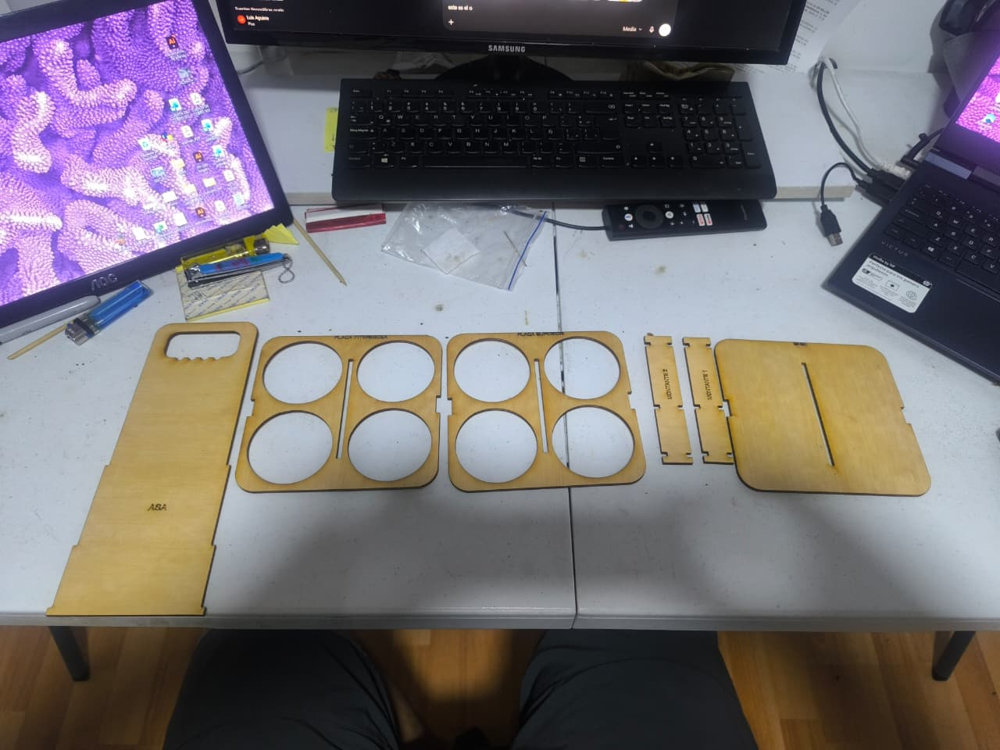

Tu guía de ensamblaje
Portavasos de madera · 6 piezas físicas
Cámara lista para activar
Apunta al objeto o al marcador QR de la base. La cámara funciona con HTTPS y tu permiso.
GUÍA VISUAL · sin cámaraQR no detectado
La guía visual puede usarse sin cámara
PASO 1 · BASE
Ubica la base
Pon la placa sin orificios circulares sobre una superficie firme. Identifica su ranura central.
Estas fotos corresponden al objeto del equipo. El QR se imprime y se coloca al lado de la base; la web detecta ese marcador, no reconoce automáticamente las piezas de madera.

Ver o imprimir marcador QR de la base
El orden de montaje es una hipótesis visual basada en las fotografías; antes de usarlo con terceros, el equipo debe verificar las uniones y corregir los pasos que no correspondan.